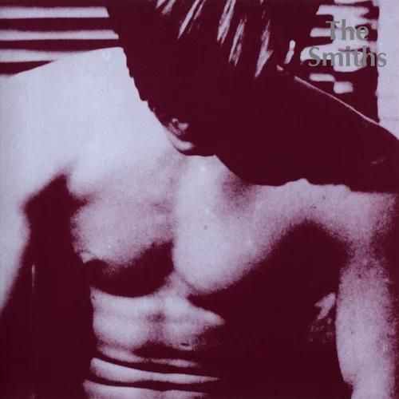
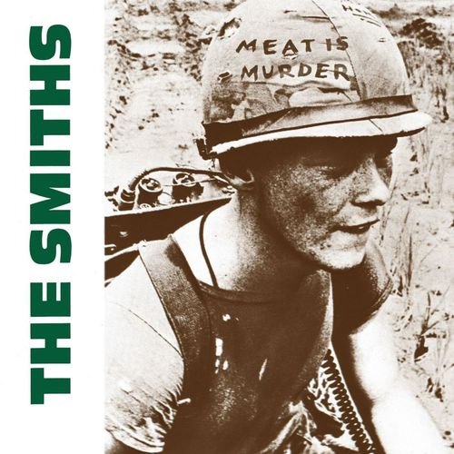
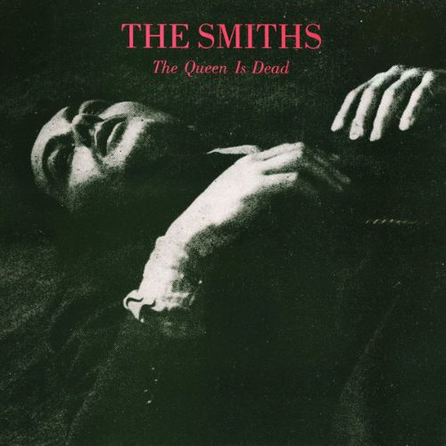
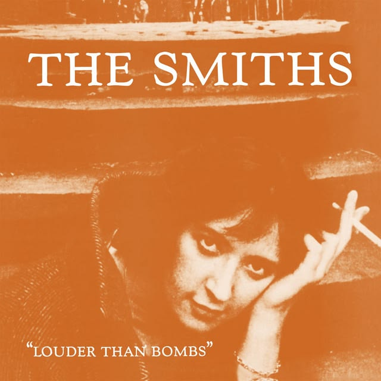
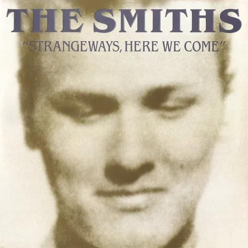
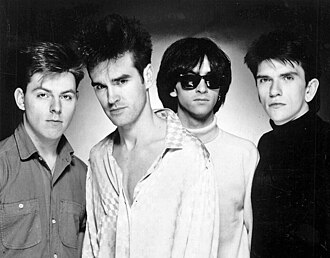
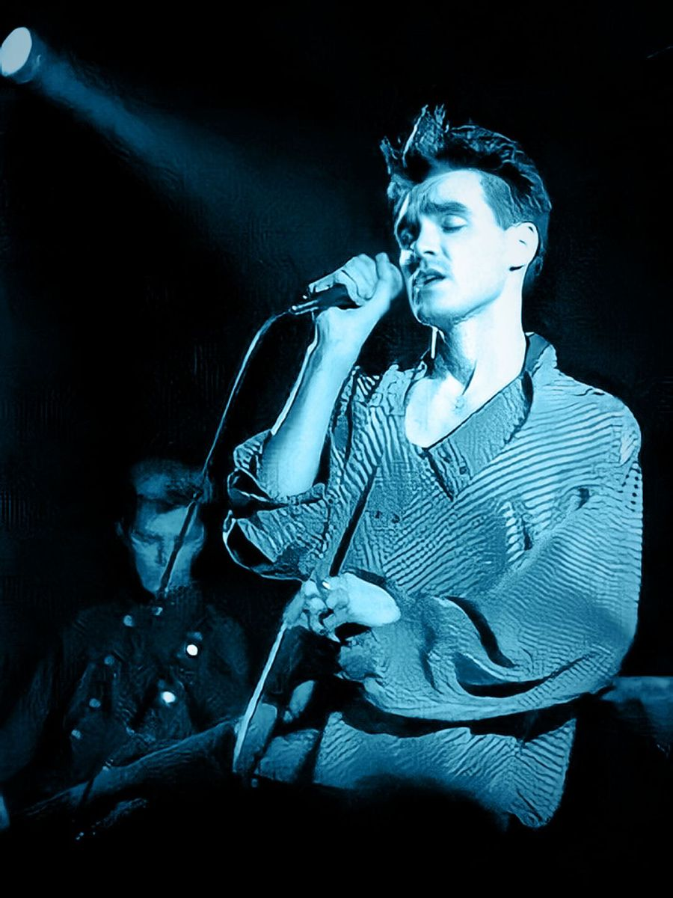
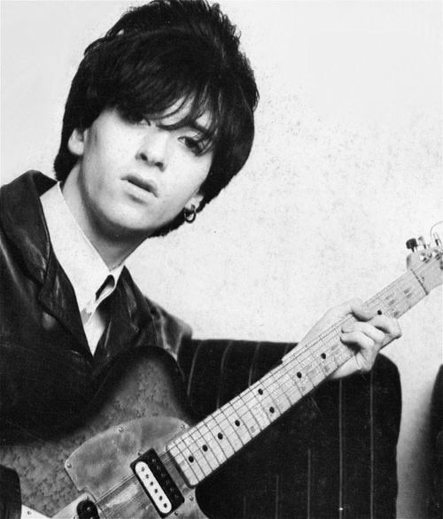
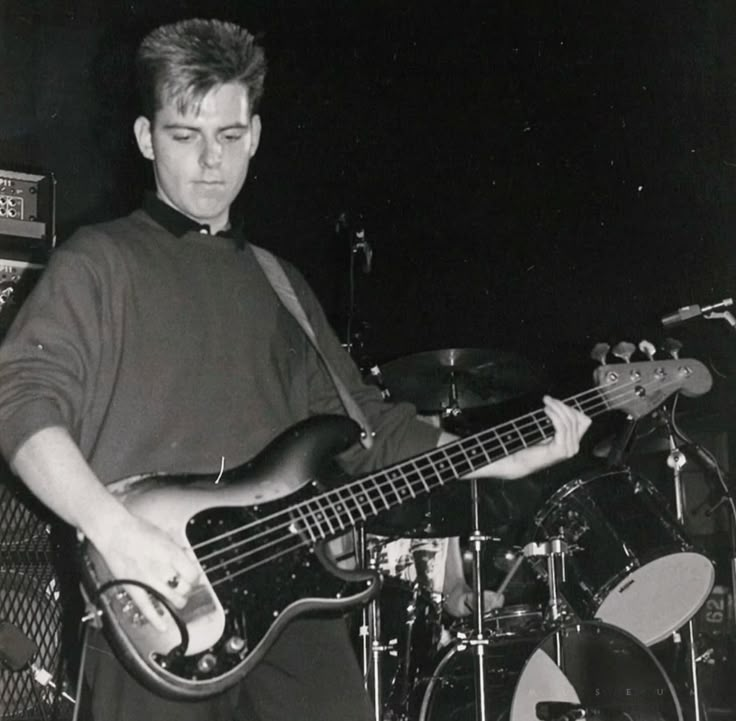
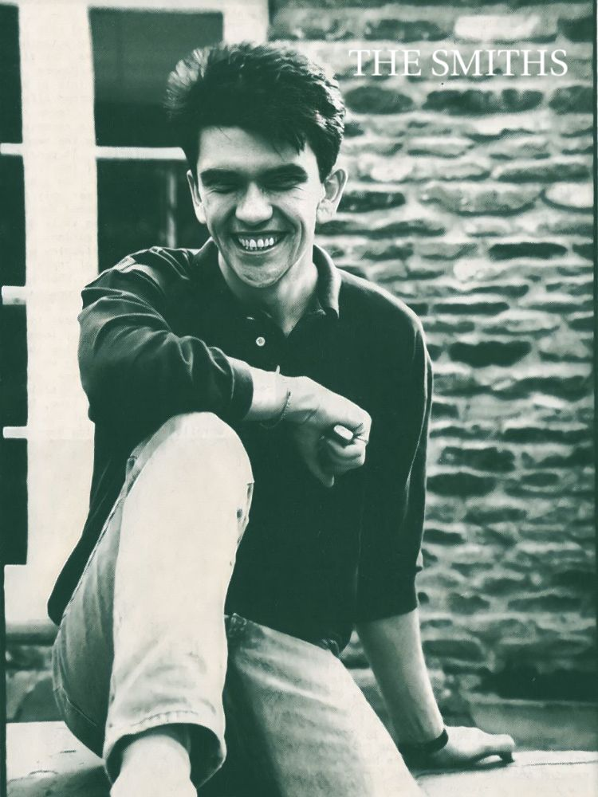

Álbuns

The Smiths
1984

Meat is Murder
1985

The Queen is Dead
1986

Louder than bombs
1987

Strangeways, Here We Come
1987
Rank
1988

Mitski Miyawaki é uma cantora e compositora conhecida por sua abordagem emocional e intensa. Nascida no Japão e criada em diversos países, sua música reflete experiências multiculturais.
Sua carreira ganhou destaque no cenário indie com álbuns marcados por letras profundas e sonoridade única, abordando temas como identidade, solidão e relações humanas.
Morrissey - Vocais

Johnny - Guitarra

Andy Rourke - Baixo

Mike Joyce - Bateria


1984

1985

1986

1987

1987
1988
There Is a Light That Never Goes Out
Back to the Old House
Bigmouth Strikes Again